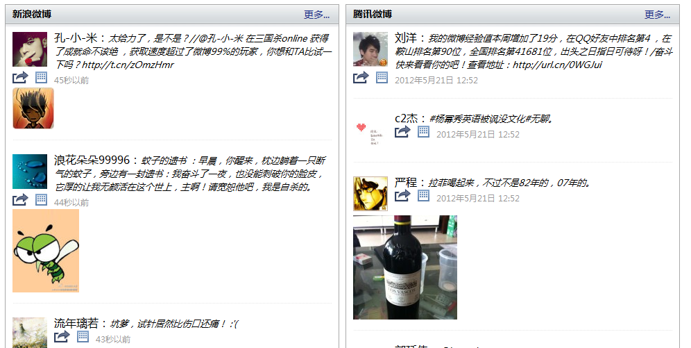

前期
最近一个项目（哎，其实做了半年了......），完成的是网上很多资源的汇聚功能，其中有一块为腾讯、新浪等微博的信息汇聚功能。
刚开始时候当然是看新浪以及腾讯的API，然后花了点时间做研究，便开发出来了第一版的微博关注框：
此关注框有以下特点：
1 必须登录授权
2 一般取该用户的微博信息
3 不登陆什么也米有（废话......）
4 回复及图片都可以取出来，但是视频等方面没能做官方那么复杂（视频，收藏，评论等功能未实现......）
但是马上便遇到问题了
1 领导要求最热的信息汇聚，并能提供类似腾讯、新浪等多数功能
2 用一关注框完成所有热门微博的信息汇聚功能......（好吧，我承认这个功能很强大，注意是所有）
3 每次微博皆要登陆，领导觉得很烦，他不想登陆（我也不想登陆但是貌似有点难......）
......
过程
免登陆的烦恼
关于免登陆这个功能点，我搞了很久，最后都搞不出来，和一个搞销售的兄弟聊了下天，他突然说了句。
我若是将微博账号、密码告诉了你，你能保证他的安全性吗？
对呢？我能吗？我当然不能，我一个小小的开发有何能力能保证他的安全性?
假如项目做的很好，推广的很成功，到一段时间搞不好便可以积累，成千上万甚至更多人的qq或者微博账号密码。
于是，我们是否可以由此盗用用户的信息作为发财的手段呢，在利益面前，信用的力度很低了，况且是一个程序员的保证......
扯远了，虽说这个和项目功能不沾边，但是我突然意识到就算用户肯将账户给我们，新浪、腾讯也不会肯，于是开始做其他方面研究。
前端人员的烦恼——跨域你真的理解了吗？
当然，之间我做了一件非常愚蠢的事情，和上面没什么两样，花了三个多小时再弄，最后还是老大提醒才焕然大悟......
我做了一个实验，建立a页面和b页面，在a页面中写js代码，然后在b页面中写html元素，在a页面用iframe引入b页面
然后在a页面中操作b页面，当然！！！我成功了......（已经看懂了的人不许笑......）
然后，我将a页面中引入了微博的登陆框，企图在a页面中操作b页面的元素......
好吧我知道我恨愚蠢，我搞了很久，发现怎么都不得行，最后老大说，你getJson时候都知道要跨域，你现在想操作登陆页面的元素。
怕是在挑战浏览器的安全性吧.......好，我承认我傻了......
后台代理带来的改变
前台不能跨域，后台总可以请求吧，于是用最原始的方法用后台做了一次代理，好不容易将两个公共微博的东西弄了出来

这两块依次为各个微博的免登陆接口，所以不用登陆也可以取数据，算是欺骗领导吧......
求解决方案
好了问题来了:
现在准备申请几个公共账号，从后台登陆去取数据，然后做汇聚，做免登陆的实现，但是我想问问！！！
各位大哥有点什么其他办法没有......
免登陆，访问微博（或者只登陆一次）
跪求。。。。。。